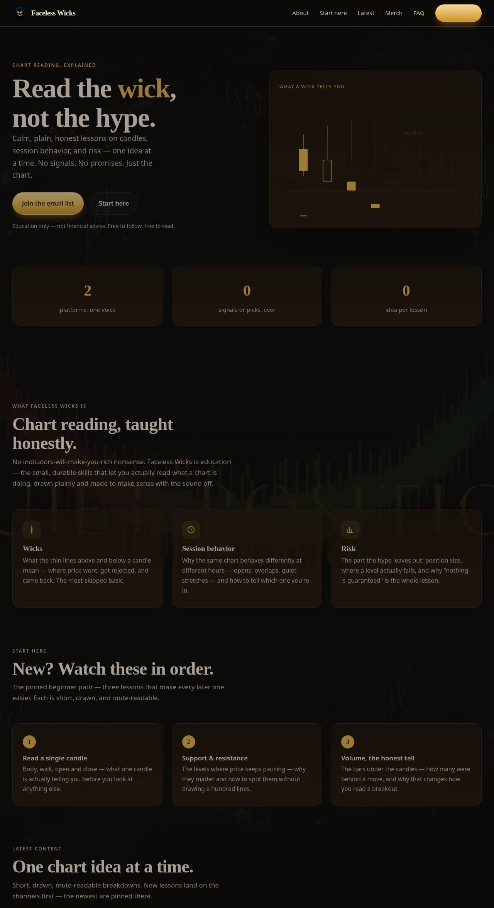

LiveFull stack developer · V.R World Media
Jose Gomez
I build websites, software, apps, and the secure back ends behind them. This page is the flagship: every module on it actually runs, including real Python, live in your browser.
- Live websites
- 0
- Public repos
- 0
- Core languages
- 0
- Frameworks on this page
- 0
Hand written HTML5 · CSS · JavaScript · Python, no page builders, no templates.
Selected work
Proof, not promises.
Every project below is real and reachable. Where something is a demonstration, it says so on its face. That honesty is part of the work.
Posting Dashboard — Back-End Build
A running local server that queues and publishes posts for four channels: Python HTTP API, SQLite state, slot rules enforced server side. It runs on a workstation, not a public host, the code exhibits are in the Back End chapter.
- Python
- SQLite
- REST API
This Flagship — Portfolio & Lab
The page you are reading: a chaptered reference of HTML5, CSS and JavaScript with a live Python runtime, and the template the V.R World Media sites are built from.
- HTML5
- CSS
- JavaScript
- Python (WASM)
The Lab · JavaScript, working
Don’t take my word for it. Press things.
Four live modules, written in vanilla JavaScript. If it’s on this page, it runs. That’s the whole standard.
Candle Lab
Canvas · math · animationCandles are generated and drawn frame by frame; the stats are computed from the same data: change, average range, longest green streak.
Data Lab
Arrays · filter · sort · DOMThe FES Bookstore’s sample catalog, driven live: Filter, sort and price cap it, the list renders from data, not markup.
Accent Lab
CSS variables · live themingThis site’s palette is three signal colors on dark ink. Drag and the whole page changes theme through CSS custom properties, no reload, no rebuild.
Aa — the quick brown fox, in the current accent.
Your choice is remembered on this device (localStorage): theming as a feature, not a screenshot.
Ask Lab
Accordion · native + JSYes. Live sites, repos and languages are counted from the work itself. The bookstore catalog is labeled sample data wherever it appears, including in the Data Lab.
Because it isn’t. It’s a front end demonstration from coursework, the label is the difference between a demo and a deception.
Yes, CPython compiled to WebAssembly (Pyodide) executes locally in your browser. Try it in the Back End chapter below; no server is involved.
Same trick, zero JavaScript (native <details>)
This panel uses only HTML5. Knowing when *not* to write JavaScript is also the craft.
Back End · Python & SQL
The half a screenshot can’t show.
A static host can’t run a server, so this chapter does two honest things: it shows the patterns the dashboard actually runs on, and then it runs real Python, in this page, so you can watch it work.
Exhibit A — Python service
import json, sqlite3
from http.server import BaseHTTPRequestHandler
db = sqlite3.connect("hub.db")
db.row_factory = sqlite3.Row
class Hub(BaseHTTPRequestHandler):
def do_POST(self):
post = json.loads(self.rfile.read(int(
self.headers["Content-Length"])))
if slot_taken(db, post["channel"], post["slot"]):
return self.reply(409, {"error": "slot taken"})
db.execute("INSERT INTO posts VALUES (?,?,?,?,?)",
(post["id"], post["channel"],
post["slot"], post["caption"], "queued"))
db.commit()
return self.reply(201, {"status": "queued"})The posting dashboard’s shape: a small Python HTTP API over SQLite, with the rotation rules enforced server side, not trusted to the client.
Exhibit B — SQL
SELECT channel,
COUNT(*) AS posts,
SUM(published) AS live_posts
FROM posts
WHERE scheduled_for >= date('now', '-14 days')
GROUP BY channel
ORDER BY live_posts DESC;The two week readout query: what actually went live, per channel, the same shape as the Friday content readouts. Parameterized queries only; user input never touches SQL as text (that’s the injection lesson, applied).
Python, live in this page
CPython · WebAssembly · PyodideEdit the code, press run. A real Python interpreter loads on demand and executes locally, and the candle math below is computed by Python, not JavaScript.
Interpreter not loaded yet — first run fetches it (~seconds).
# output appears here
Skills · four lenses
One developer, four ways of seeing.
Websites that work end-to-end
Landing pages, funnels and storefronts: semantic HTML5, modern CSS, real JavaScript, deployed and verified live. The three sites in the proof strip are this lens.
- HTML5
- CSS
- JavaScript
- Python
- SQL
Software & automation
Tools and servers that remove manual work: APIs, schedulers, data pipelines, the posting dashboard is the standing example.
- Python
- JavaScript
- SQL
- Git & GitHub
- Bash
Apps & interfaces
Interactive web apps with real state: forms, local storage, live data views, built mobile first and tested at phone widths.
- JavaScript
- HTML5
- CSS
- Python
- SQLite
Security, studied & applied (study track)
Secure by default habits learned in a dedicated cybersecurity & SQL course: parameterized queries, least privilege access, no secrets in code. A lens on every build, not a certification claim.
- Python
- SQL
- HTML / JS
- Bash
Process
How a build ships.
- 01
Spec
The page’s job, its audience, and what “done” means, written down before code.
- 02
Build
Hand written, mobile first, every asset local and resolving. Nothing ships unfinished.
- 03
Verify
Live checks at desktop and phone widths, a compliance scan, and an independent review, the builder never signs off on their own work.
- 04
Bank it
Code to GitHub, visuals to the project archive, links into the profiles. Work that lives on one laptop isn’t done.
Contact
Let’s build the next one.
The form validates in your browser and opens your mail app with the message composed. No data is stored or sent anywhere else.